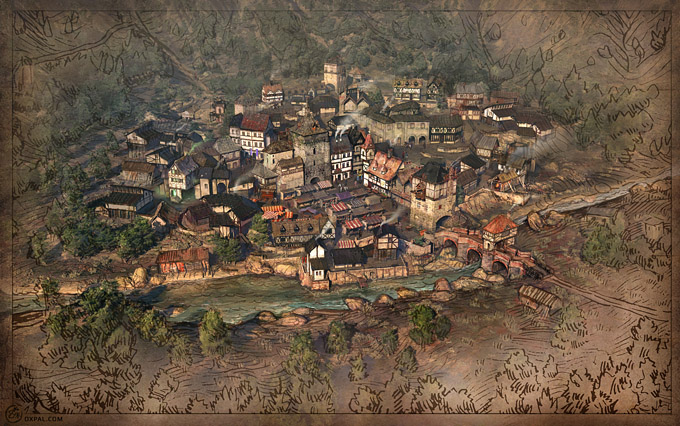
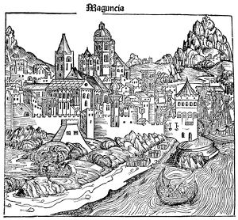
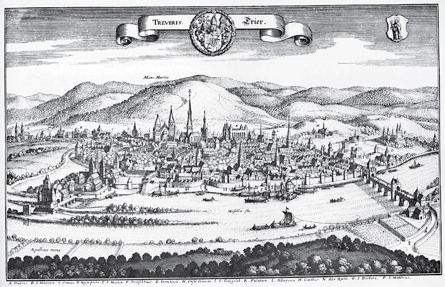

Chapter 3 The Town of Metz




3.1 Rumors
| 1D12 | Rumor |
|---|---|
| 1 | Christman abducted Lise Mueller. |
| 2 | Bartholomäus Bock has not been seen in a few days. |
| 3 | Goetz von Berlichingen declared a feud with the city, defecated into a barrel of wine and sent it to the city council. |
| 4 | Several graves have been looted in the last few weeks. Something is going on at the graveyard. |
| 5 | The Gravenstein family is looking to recover an old necklace, stolen from their family crypt. |
| 6 | The mayor, Sigmund Hofstatter, does not have the full backing of his council. |
| 7 | The local printing press has been putting out pamphlets critical of the Church. |
| 8 | Travelers have reported a group of witch hunters camping not too far away. They are looking for heretics. |
| 9 | The Frassberg region in lousy with bandits. They prey just as much on each other as on travelers. |
| 10 | Despite the banditry, the cloth and wine merchants have been thriving. |
| 11 | Peter Stumpp, a wealthy farmer out of Bedburg, is looking for good matches for his daughters. |
| 12 | The mayor is looking to hire mercenaries to deal with the bandit problem. |
3.2 What is Going On in Metz?
Lise Mueller, daughter of a respected goldsmith has vanished. The town thinks Christman took her. Regular citizens are calling for more action against the bandits. Her father, Markward Mueller, is offering an old golden torque as a reward (works like a Ring of Protection). He is convinced Christman took her. In reality, he only knows that Lise went for a walk along the river 2 weeks ago and never returned. If anyone asks to see her private chambers, he will be reluctant but will allow it with a strong argument. Her room has a secret compartment under the floor boards (1:6 chance). Her diary can be found there. It details how a man wreathed in shadows has been visiting her dreams and been instructing her in the “Old Craft”. In exchange, he asked her a favor.
The Bürgermeister of Metz, Sigmund Hofstatter, is keen to address the bandit problem in the region of Metz. He has big plans for more trade and sees the long-term fortune of Metz in jeopardy. He is willing to pursue a more militant strategy. He has issued a 20k gp reward for the capture of Christman, dead or alive. Furthermore, he is offering 1k gp for other bandit leaders. 10gp for a regular bandit.
A faction on the Stadtrat, the wine and cloth merchants, have a secret agreement with Christman. They pay him handsomely to engage in his banditry away from Metz. They fear the Bürgermeister’s new approach is threatening their agreement and secretly oppose him. They are scheming to have the mayor disgraced. They are considering fomenting religious strife in town with the help of the Witch Hunters. The resulting conflict might distract the mayor or even offer an opportunity to remove him.
Corpses have been vanishing from the graveyard (Peter Niers is using the assistant grave digger to procure fresh corpses.). Some wealthy citizens are becoming concerned and are offering a 2,000 gp reward to stop whoever is looting the graves and return a missing family heirloom (to be found in Peter Niers’ tower).
City of Metz is in a feud with Goetz von Berlichingen, famous robber knight. There is a reward of 5,000 gp, financed by the guilds, for whoever can bring an end to the feud.
Bartholomäus Bock, local scholar and investor in the printing press, has not been seen for a few days. Bartholomäus Bock is a member of the Kristallbund and has a secret laboratory under his office. He recently died down there trying to create artificial life. The Kristallbund is a Secret Society, focused on the Enlightenment, magical power, and is fervently anti-religious (This is the Age of Man, not God!).
3.3 The City
Metz has a population of about 16,000 people, but not all a full burgher. The city maintains a city watch of 110 (statistics of a Bandit).
The city is governed by the Stadtrat, which consists of fifteen individuals, mostly guild representatives. The Stadtrat selects the Bürgermeister, who has administrative authority over the city.
Main economic sectors in Metz are the trade of cloth and wine. The city also home to renowned goldsmiths and a leather working industry. Metz has two printing presses and has an emerging book printing industry.
3.3.1 Alt Metz
Town square and main market
Guildhall
Mayor’s Hall and Court
Church of St. Ignatius and Residence of Bishop Jean de Lorraine (86 years old, decrepit, business is run by the Vicar General)
Zum Goldvogel (inn and tavern, good quality)
Residence of wealthy citizens
3.3.2 Katzengarten
Vagrants, people not allowed into the city proper, and seasonal workers reside here.
Many stables are located here.
Carts and transportation can be purchased here.
Katzenjammer tavern (poorer quality).
Note: Peter Niers has been using this area as his hunting grounds, kidnapping women and children. He preys on the poor, foreigners, and refugees. I avoids going after relatives of burghers, not too draw the ire of the townsfolk.
3.4 The Guildhall
Guards: Level-2 Fighters, full plate and shield, spears and short swords or crossbow.
1st floor
Main guildhall for the City of Metz. All major guilds organize their business here. During the day, citizens are welcome to enter. A clerk will receive them and ask their business. Two guards are posted outside the main entrance at all times.
Clerk’s hall. 2 Guards on watch during the day.
Main meeting hall. Back of the hall has secured access to the stairs leading to the basement. 2 guards on watch during the day and night. All guildmasters have keys to access to door to the basement.
Offices
Servant rooms on the East side.
2nd floor
- Guard’s rooms and armory. During the day and night, 6 more guards on look-out and reserve. Alarm bell to alert the city watch of necessary.
Secret Basement
Two small rooms:
3 blocked crypts with old guild masters’ remains. Each can be accessed within 1 turn and appropriate tools. Karlus von Niffeling, Master of the Goldsmiths: A golden ceremonial sword worth 1,300 gp. Alois de Friis, Wine Merchant Master, 2x bejeweled ring (worth 250 gp), a potion of Poison (! not dsicernible to PCs), 1 potion of longevity. Gotfrid Hummelsberg, Cloth Merchant Master: A Wraith, +2 shield, +1 sword (+2 vs. lycanthropes).
Two Animated Armors in the alcoves, attack anyone without a guild seal.
Main vault. Ceiling is ten feet high. Four pillars hold up the ceiling (keen eyes can spot that the ceiling can drop). Each pillar has a key hole. Four guildmaster keys have to be put here at the same time to secure the ceiling. If that does not happen within the first Turn of someone stepping into the room, a portcullis will drop and block the exit and the ceiling will descend. 2ft per round. The same mechanims also triggers an alarm bell. Niches in the walls, full of strongboxes. Each box is locked and keyed to a specific guild. Each box contains gold worth 2d6 X 1k gp.
Secret door to secondary vault. Passage with a scythe trap. Door with Wizard Lock (caster level 5). Sigil of the current Guildmaster of the cloth or wine merchants opens the door. Breaking the door causes an eldritch explosion of 4d6, save vs Breath for half. Second passage has two Rust Monsters. Second door has a puzzle lock:
Secret vault: Lesser Efreeti bound to protect the vault against intruders. 15k gp, 4 random MU scrolls, 2 cleric scrolls, +2 spear, 10 +1 arrows, Ring of Controlling Humans, Bag of Holding, Boots of Speed.
Document room: evidence of supplies for Christman.

3.5 The Secret Workshop of Bartholomäus Bock
The House of Bartholomäus Bock has two stories.
1st floor Scriptorium and office. Lockbox in the main desk (poison needle trap, 250 gp). Well-appointed library with mostly legal and religious texts. Hidden trap door to the basement and secret laboratory. Trap door is hidden under an old carpet and a chest full of writing supplies. The trapdoor is locked via Wizard Lock.
2nd floor
Personal apartments. Nothing of interest here except for some gold and silver rings worth 750 gp. A portrait of Bartholomäus painted by Lucas Cranach the Elder (worth 1,200 gp).
Basement
- Each star is a construct that activates when the electricity field is turned off. Glass figures filled with swirling, multi-colored liquids and gases. When destroyed roll for effect
| 1D6 | Effect |
|---|---|
| 1 | Splash damage of 1d6 acid on anyone in melee. |
| 2 | Sleep spell triggered |
| 3 | Caustic smoke, save vs. Poison or spend one round coughing, unable to act. |
| 4 | Paralytic agent, save vs. Poison or half speed and you can only move or attack for 1d6 rounds |
| 5 | Confusing fumes. Lose one prepared spell (determine randomly). |
| 6 | Healing goo. Recover 1d6 HP. |
Clockwork (stats of a Stone Golem), field of electricity: once per round, a random person wearing metal armor is struck by lighting (3d6 damage, save vs. breath for half). Determine randomly (any metal 1 chance, chain 2 chances, plate 3 chances). Fleshgolem attacks anyone trying to pass to the other side of the room.
Puddle of gore on the ground close to the Golem.
Lever all the way North can turn electricity off. Once electricity field is turned off, constructs activate and attacks anyone in the basement.
Two rooms on the right: storage. One thief trapped here.
Room on the left: personal study, spellbook (5 level 1, 4 level 2, 4 level 3, 3 level 4, 2 level 5) and scrolls (4 level 1, 4 level 2, 1 level 3, 1 level 4), Wand of Lightning Bolts, gems worth 800 gp. Coded letters indicating correspondence with other members of the Kristallbund, anti-religious activism (hooks for other adventures can be inserted here).